Semester Project:Learning Structural Dynamics with Graph Neural Networks
Learning Structural Dynamics with Graph Neural Networks
Advisor: Prof. Eleni Chatzi, Dr Gregory Duthé
Introduction
Finite Element Method (FEM) is a predominant approach in Partial Differential Problem(PDE), particularly in structure mechanics problems, due to its precision and capability to handle non-Euclidean topologies. Despite its advantages, FEM is time-consuming and memory-intensive for large-sclae systems, often requiring linear or non-linear solving operatios. With the advancements in Deep Learning, Graph Neural Networks (GNN) have emerged as a promising solution for processing non-Euclidean data. Inspired by Physics-Informed Neural Networks (PINN) [@raissi2019pinn], the PI-GNN [@GNN-DBC-static-condense] model represents an innovative integration of FEM and GNN, aiming to efficiently process physical loss and non-Euclidean data with more flexibility than traditional grid data in PINN. However, to handle the Dirichlet boundary condition applied to the FEM, it intuitively adopts the static condensation formula to propagate the information from the Dirichlet boundary to the inner part of the solving domain. Thus, the Dirichlet boundary condition is decoupled in this model.
In this study, we focus on linear elasticity problems, exploring both the forward (solve loading force from displacement) and reverse (solve displacement from loading force) processes. Our approach includes adapting the static condensation formula in FEM to intuitively handle Dirichlet boundary conditions by propagating information from the boundary to the domain’s interior.
Our key contributions are :
-
Introduction of Static Condensation Equivelant Architecture (SCEA)
for modeling the Dirichlet boundary condition in the FEM problem. -
Developmenet of Galerkin Equivelant Architecture (GEA), which takes
several forms including the local pseudo linear, local pseudo
bilinear, and global version. -
Extensive experiementation to analyze the relation between the
observation ratio and the precision of the model for various
scenarios(invariant, boundary-variant, and force-variant), in which
could we visualize the generalization competence for physical loss. -
Proposal of a fast and differentialble assemble method representing
the assemble step in FEM as sparse-dense tensor multiplication.
The source code for this project is publicly available and can be accessed at the following GitHub repository: https://github.com/walkerchi/ETHz-SP.
Background
Abbreviation
| Abbreviation | Description |
|---|---|
| FEM | Finite Element Method |
| PDE | Partial Differential Equation |
| DoF | Degree of Freedom |
| DBC | Dirichlet Boundary Condition |
| NBC | Neuman Boundary Condition |
| NB | Non-Boundary |
| MLP | Multi Layer Perceptron |
| GNN | Graph Neural Network |
| GCN | Graph Convolutional Neural Network |
| GAT | Graph Attention Neural Network |
| SIGN | Scalable Inception Graph Networks |
| PINN | Physics Informed Neural Network |
| SCEA | Static Condensing Equivalent Architecture |
| GEA | Galerkin Equivalent Architecture |
| MSE | Mean Square Error |
Table 1:Abbreviation Table
Symbol Table
| Symbol | Physical/Mathematical Meaning | Shape |
|---|---|---|
| Dimension of the problems | ||
| Stress | ||
| Strain, | ||
| Displacement | ||
| Normal vector on the boundary | ||
| The PDE domain | ||
| Boundary of domain | ||
| Mesh | ||
| Vertices/nodes in the mesh | $\mathbb N^{ | |
| Elements/cells in the mesh | $\mathbb N^{ | |
| Number of nodes per element/cell | ||
| Basis function | $ | |
| Connections in the graph | ${(u,v) | |
| Galerkin matrix | ||
| Total/inner/DBC DoF | ||
| NB/NB & DBC/DBC DoF | ||
| Stiffness tensor | ||
| Assemble tensor for nodes/vertices | $\mathbb R_{\text{sparse}}^{ | |
| Assemble tensor for edges | $\mathbb R_{\text{sparse}}^{\mathcal C\times h \times h \times | |
| Adjacency matrix of the graph | $\mathbb R_{\text{sparse}}^{ | |
| Degree matrix of a graph | $\mathbb R_{\text{diagonal}}^{ | |
| Neighbors of node in a graph | $\mathbb N^{ |
Table 2:Symbol Table
Finite Element Method
Finite Element Method is a commonly used method for solving Partial Differential for it’s scalability and accuracy. The canonical FEM process takes the following steps.
-
First, generate a mesh in a given PDE domain
-
Second, turn the strong form PDE to weak form PDE. Take the poisson equation as an example <span class=“hint–top hint–rounded” aria-label=“ is called "trial space", is called "test space"”>[1].
-
Third, choose the basis function function and
quadrature rules for each element in the mesh . -
Fourth, compute the Galerkin matrix and load vector for each element. Take the poisson equation as an example , [2].
-
Fifth, the galerkin discretilized weak form becomes . By solving this linear system, we get the variable for each basis.
In a canonical FEM process. We first generate a mesh in a given PDE domain .
Linear Elasticity
In continuum mechanics, the relationship between stress and strain is modeled by a 4-th order tensor according to the following Equation:
Assuming the most simple model, Linear Elasticity, which could be formulated as:
Static Condensing
Normally there are three boundary conditions for PDE equation
-
Dirichlet Boundary Condition :
-
Neuman Boundary Condition :
The NBC can be easily coupled in the weak form, while static condensing is usually used to solve the DBC. Considering the Dirichlet Boundary , we could partition the Galerkin matrix into blocks and load vectors into blocks, as shown in Equation
where, is the galerkin matrix for non-boundary DoF of shape . And is the commute galerkin matrix for non-boundary DoF and DBC DoF, which is of shape . The is the galerkin matrix for DBC Dof of shape . We illustrate the problem in Figure [1], where orange parts are unknowns and blue parts are known. In this way, we could conclude that the purpose of static condensation is to calculate using
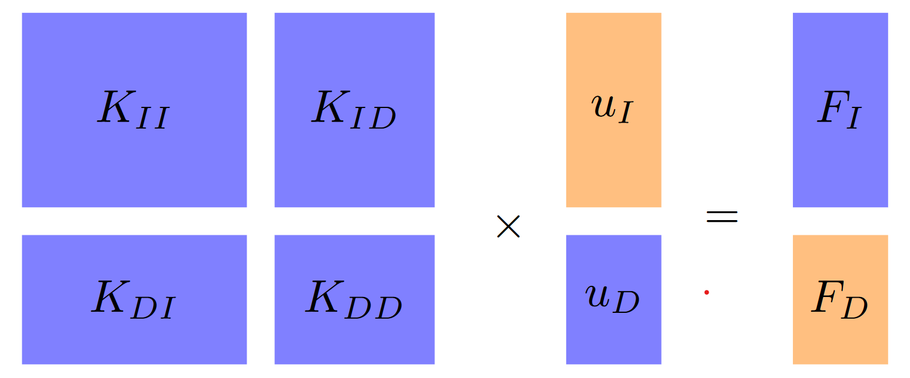
According to Equation static-condensation-partite, we could obtain two essential formulas for static condensing:
Graph Neural Network
Graph Neural Networks are a popular deep learning tool to handle non-euclidean data like social networks [@gnn_rs_survey] or particle interactions [@deepmind2020learning]. GNNs are well researched for their applications on large scale graphs, and are typically highly parallelised and optimizatized for certain hardware [@gnn-survey].
The Chebyshev Spectral Convolutional Neural Network [@chebnet_defferrard2016convolutional] was the first to introduce a spectral approach to Graph Neural Networks. This method is related to the Graph Convolutional Network [@gcn_kipf2016semi], which is the first order approximation of ChebNet, and takes the following simple form:
where is the laplacian matrix which could be computed as . To prevent self-information from being lost during the propagation, an adjacency matrix with self loops is adopted here. Furthermore, to ensure consistent of information scale for all nodes, the propagation weight is normalized by the square root inverse of degree of two nodes connected by a edge.
Since the Attention mechanism [@vaswani2017attention] has typically led to remarkable achievement in Nature Language Processing and Computer Vision, it has also been applied to graphs [@gat_velivckovic2017graph], as the Graph Attention Network. The aggregation step of GAT takes the form of Equation gat, where is the learnable weight and denotes all the neighbors of vertice , including itself. To compute the aggregation weight, a softmax is used as in Equation
Inspired by the U-Net [@unet_ronneberger2015u], a Graph U-Net [@graphunet_gao2019graph] was recently proposed to learn multi-scale information in graphs. For the pooling step of the U-Net, topk pooling is normally adopted, which takes the form of Equation graphunet-topk-pooling, with the selected vertice index and projection vector.
Oversmoothing [@oversmooth_rusch2023survey] is a command curse caused by the message-passing framework, where multiple propagations tend to make far-away node features indistinguishable. However, Scalable Inception Graph Neural Networks [@sign_frasca2020sign] keeps multi-propagation node features and concatenates them as a latent feature. The architecture of SIGN is shown in Figure 2 and follows Equation.
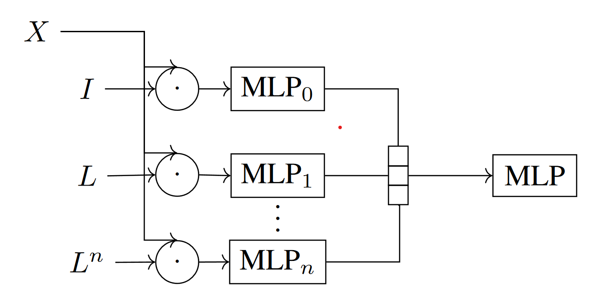
GNNs for FEM
Since the meshes used FEM are non-euclidean, some researchers have tried to use GNNs as an alternative to FEM.
Some studies use the elements as nodes to build the graph [@GNN-FEM-naive; @FEM-DBC-fully-connected], while others use the
vertices in the mesh to build the graph [@GNN-FEM-time-seq; @FEM-DBC-PINN; @GNN-DBC-static-condense]. We call the former graph the an ‘Element Graph’, and the latter one a ‘Vertice Graph’.
In the literature, element graphs have been used to directly encode the boundary conditions into the features of the element, using a encoder-decoder GNN structure to simulate FEM [@GNN-FEM-naive]. Another study [@FEM-DBC-fully-connected] assumes is a dense matrix, and therefore use dense connection between the boundary elements and the interior elements.
For vertice graphs, a recent study [@GNN-DBC-static-condense] used a naive method to tackle the condensing, and directly processed the loads according to Equation static-condensation-formula. To learn the latent physical rule, they use Physical Informed Neural Network as the model.
Methodology
Mesh to Graph
For this work, we choose to use vertice graphs rather than element graph, since element graphs are closer to Finite Volume Method and are not equivalant to the Finite Element Method from physical view.
We use the Algorithm mesh2graph to generate the graph connections from the given elements . It is easily implemented in Pytorch [@pytorch_NEURIPS2019_9015] and could easily be parallelized on GPU. For line mesh2graph-meshgrid of this algorithm, we could use torch.vmap(torch.meshgrid) to parallelize it, and for Line mesh2graph-coalesce, we can use torch.sparse_coo_tensor.coalesce to remove the duplicated edges.
Input: Output:
- Return
According to the Algorithm 1, each element is considered as a fully connected subgraph. The process of converting from mesh to graph can be visualized in Figure 3
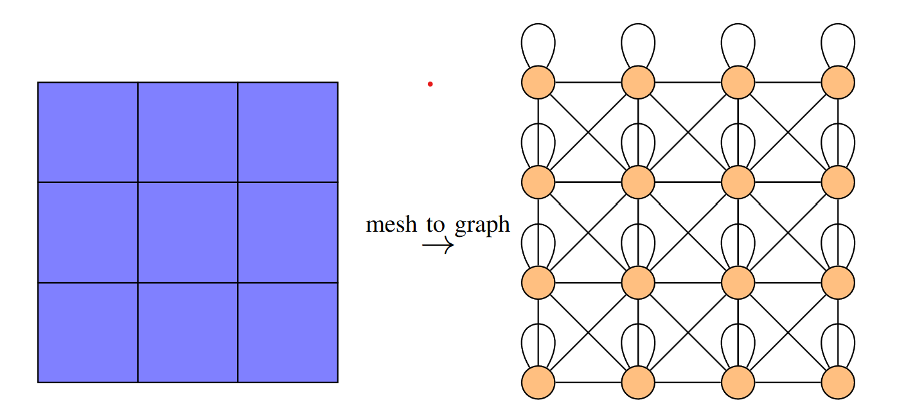
Fast Assembly
Typically, the assembly process is a time-consuming part of FEM. Traditionally, a for loop is used to do the assembly, which is very
inefficient. In this subsection, we propose a fast python assembling method called ‘Fast Assemble’, which is fast and easy to parallelize, thus unlocking the potential of GPU and NPU.
Fast Edge Assembly The Pseudo code of the Fast Edge Assembly method is presented in Algorithm 1. Its output is of shape . The coo in Line 2 denotes the Coordinate List. And csr represents Compressed Sparse Row sparse matrix storage format, which is fast for multiplication and indexing.
The assembly process for the Galerkin matrix could be viewed as a sparse matrix multiplication (non-symmetric) as shown in Figure 4.
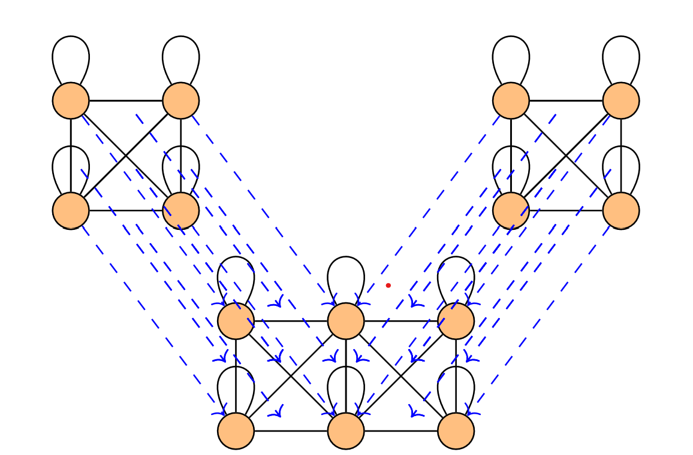
Input: Output:
- Return
Input: Output:
- Return
Fast Node Assemble We also present an an algorithm for ‘Fast Node Assembly’, the result of which is . We also show the pseudo code in Algorithm 5.
If the topology of the mesh stays consistent, then the computational
cost for both the Fast Edge Assembly and the Fast Node Assembly is only
a sparse matrix multiplication. Therefore, the algorithm is fast and
easy to parallelize and can be directly implemented on GPU using
Pytorch [@pytorch_NEURIPS2019_9015].
Input: Output:
Return
Input: Output:
Return
Static Condensing Equivalent Architecture
Suppose a naive situation in Assumption 1, that for DBC vertice, all dimension are constraints. For example, in the FEM problem, all three dimension of the boundary node are fixed with a given displacement.
Assumption 1. The DBC is applied to all dimensions of a vertice
In Equation static-condensation-formula, we substitute the first formula with a GNN, such that it is formulated as:
The backbone GNN, denoted as and parameterized by , is designed to solve the linear system. In
contrast, the Bi-partite GNN, , with parameters , models the propagation from boundary displacement to inner loading force. The architecture of , as described by Equation b-gnn, comprises two Multi-Layer Perceptrons (MLPs). Figure 5 provides a detailed visualization of this process.
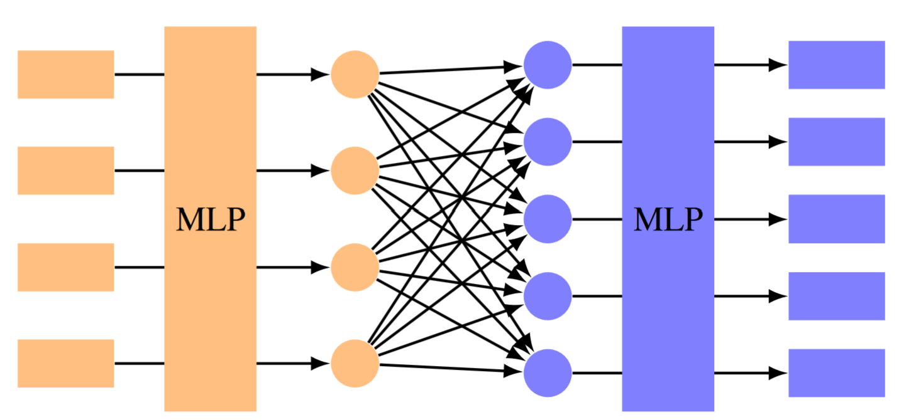
By substitute the mutual Galerkin matrix and the inverse of theinner Galerkin matrix with GNNs. This allows us to obtain the static condensation:
To visualize the architecture more intuitively, we draw the pipeline in Figure 6.
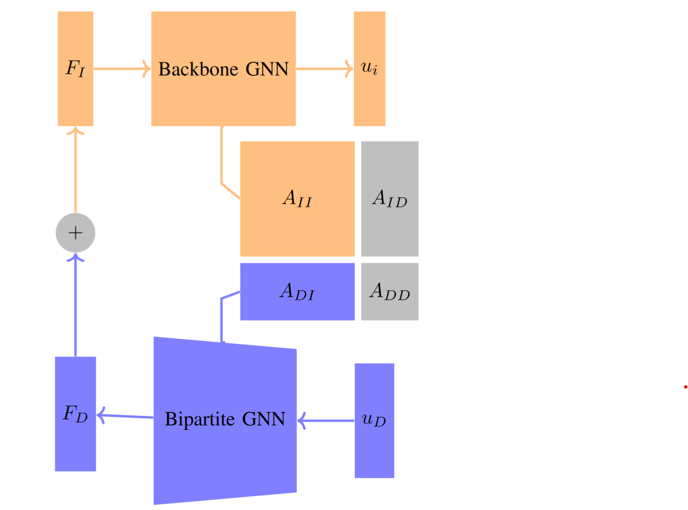
Figure 6: SCEA
The Bipartite GNN is built specially for propagating information from DBC nodes to inner nodes. It takes the following form:
Physical Loss
To illustrate the physical loss in detail, we take the Linear Elasticity PDE here.
In order to optimize the parameters in GNN to predict a better displacement .
Strong Form Loss The most intuitive loss is the strong form loss, which is directly the left and right side residual of the equation for a linear system. Normally, Mean Square Error is used. Therefore, we formulate the strong form loss as:
Weak Form Loss Apart from the linear system, we could also obtain an equation for the weak form equation, allowing us to formulate another loss function as:
where and are denoted using vigoit notation. The matrix is referred to as the vertice assembly
matrix, which is a transformation mapping from . The gradient is calculated by multiplying the gradient of the shape functions with the nodal values . Here, stands for element, for basis, for dimension, and are used for indices in the context of reduction.
Galerkin Equivelant Architecture
As for another problem, we want to model the forward process which is rather than . We could either predict the local Galerkin matrix to get the global Galerkin matrix by Fast Edge Assemble or predict the global Galerkin matrix directly.
Local Pseudo Linear GEA Assuming we can predict the local Galerkin matrix directly from the vertice coordinates by a simple neural network , then we could propose the first Local Pseudo Linear GEA as Equation local-bilinear-gea.
Local Pseudo Bilinear GEA Since the Local Pseudo Linear GEA cannot maintain the bilinear feature of the vigoit notation. Therefore, we proposed another approach: Local Pseudo Bilinear GEA with assumption and . Then we could also obtain the prediction for global Galerkin local-linear-gea.
Global GEA We could also predict the global Galerkin matrix directly using an Edge-GNN.
For all these methods, the loss function is defined as Equation
Complexity Analysis
There are many methods to solve the sparse linear system . We could mainly categorized them into two parts: the iterative methods such as Conjugated Gradient, Bi-Conjugated Gradient Stable, etc. and direct methods Cholesky or LU decomposition.
Assume a sparse matrix with non-zero entries and of size , where typically . For the operation of matrix-vector multiplication , both time and memory complexities are . These complexities are detailed in Table 3, where different methods are compared. Iterative methods, which dynamically assess convergence, introduce an iteration count . Commonly, the maximum number of iterations is capped at , and the convergence threshold for the residual is set to .
| Method | GNN | iterative method | direct method |
|---|---|---|---|
| Memory Consumption | |||
| Time Complexity |
Table 3: Approximated Complexity for each method
Experiments
Setup
Baselines
-
GCN [@gcn_kipf2016semi]: Since GCN suffers from over-smoothing, we make GCN to be 3 layers in depth with 64 hidden size. The activation function is defaulted to ReLU [@relu_glorot2011deep].
-
GAT [@gat_velivckovic2017graph]: The GAT also suffers from over-smoothing. We fix the depth, hidden size, and activation function of GAT to be the same as the GCN. The number of heads for multi-head attention is fixed at .
-
GraphUNet [@graphunet_gao2019graph] : The topk pooling will sample of the vertices. This ensures that the information is able reach the other side on the mesh. The depth of the GraphUNet is fixed at .
-
SIGN [@sign_frasca2020sign] : SIGN is a decoupled method that keeps the information for each propagation step. Therefore, it does not suffer from over-smoothing. Each MLP is assumed to be layers with a hidden size and activation function ReLU. The number of propagation in Equation sign and Figure 2 is set to be . In this way, the information will reach the same distance as GraphUNet.
-
NodeEdgeGNN: Sometimes, relative position is preferred instead of a normalized position. Therefore, we need a artificial GNN that only processes the edge feature. We propose a GNN called NodeEdgeGNN that is inspired by [@deepmind2020learning]. We build a basic block of graph convolution as Equation.
The depth, hidden size and activation function are set the same as GCN.
-
MLP :Like the neural operator, without topology information, we could also implement the prediction task using MLP.
Hardware
The experiments are carried on a laptop with i5-11300H CPU with 16GB RAM and a Nvidia MX450 GPU with 2GB RAM.
Dataset
The mesh is generated using Gmsh [@gmsh], a fast mesh generating library in C++. Each element is supposed to be a triangle with three bases . The basis function for the triangle element is shown in Equation.
where here is the local coordinate, which is considered be constrained by .
We applied different boundary conditions and load conditions to the mesh, which is shown from
Figure 7 to Figure 9. The models are expected to train on the condition in Figure 7, and test on all the conditions shown in Figures 7,8,9.
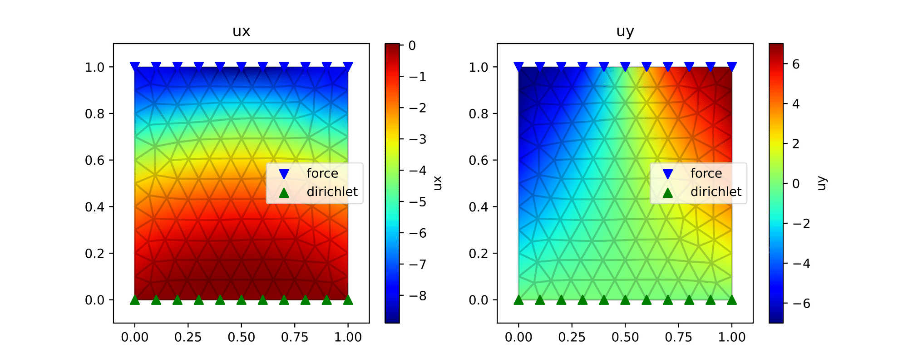
Figure 7: Rectangle with load condition
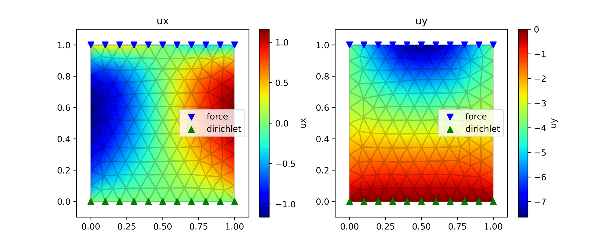
Figure 8: Rectangle with load condition
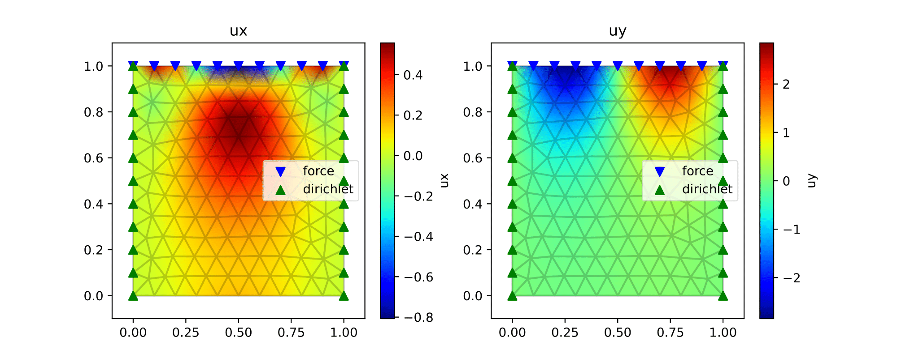
Figure 9: Rectangle with load condition and left and right boundary fixed
Loss
To combine the physical loss with data loss, we proposed three methods,
which are
-
equal : the total loss is the direct sum of data loss and physical
loss. -
weight : the total loss is the weighted sum of data loss and
physical loss.where
-
auto weight [@auto_weight_kendall2018multi]: the data loss is the
parameters () controlled
weighted sum of data loss and physical loss.
Observed Data Variant
In this experiment, when the condense type is none, it means that all the DBC are added to the training set. For static, only part of the static condensation will be executed, it takes form as Equation condense-type-static. When the nn is adopted, then the
exact SCEA will be applied according to Equation scea-equivelance
The train ratio denotes how many portions of data except DBC are observable. When train ratio becomes , then all the data is known. On the contrary, when train ratio is , only DBC are known.
Invariant Test
In the invariant test, the dataset utilized for testing is identical to the one used for training.
When the training ratio is set to 0.0, it implies exclusive reliance on the physical loss for condense type settings of either static or nn. This configuration allows for an assessment of the loss function’s effectiveness in adhering to physical constraints. Conversely, for a condense type of none, Dirichlet Boundary Conditions (DBC) are employed, forming a data-driven training set.
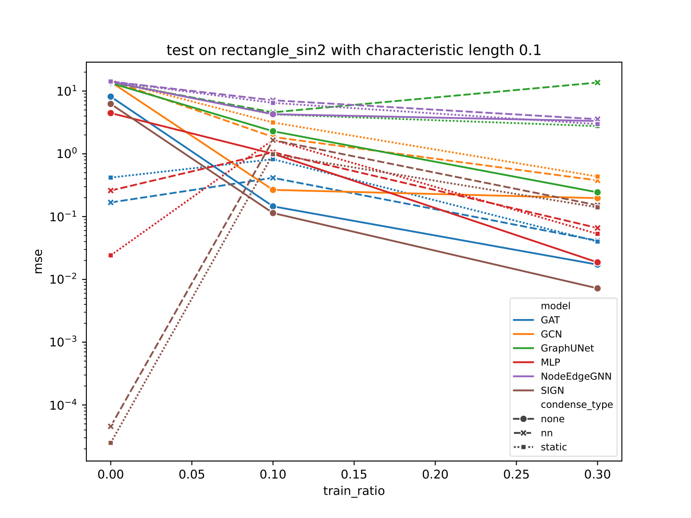
Figure 10: Invariant Test with Strong Physical Loss and Weighted Total Loss
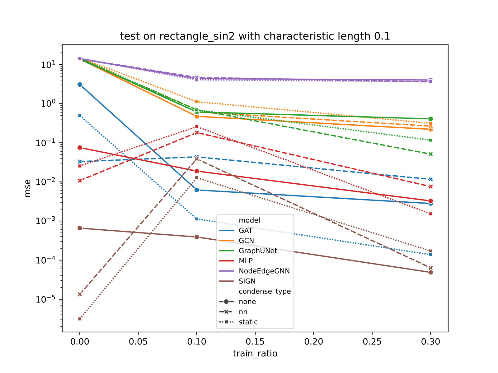
Figure 11: Invariant Test with Strong Physical Loss and Auto Weight Total Loss
There are some interesting observations.
-
When the
train ratiois set to , SIGN with eitherstaticornndemonstrates optimal performance, indicating its capability to infer latent physical rules effectively in the absence of observed data. -
At a
train ratioof , the performance ofstaticandnncondense types is nearly identical. This suggests that the B-GNN is adept at modeling the propagation of boundary conditions.
Frequency Variant Test
In the frequency variant test, distinct datasets are used for training and testing. The model is trained using the dataset depicted in
Figure 7 and evaluated on the dataset illustrated in Figure 8. The outcomes of this test are presented
in Figure [[fig:frequency-strong-equal]].
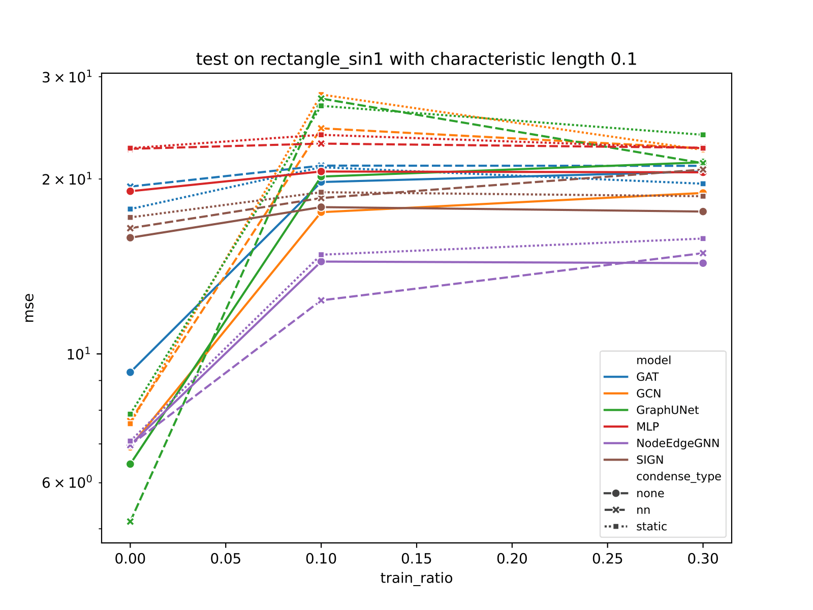
Figure 12: Frequency Variant Test with Strong Physical Loss and Auto Weight Total Loss
Boundary Variant Test
In the boundary variant test, the training dataset and testing dataset are different. The model is trained on dataset shown in Figure 7 and tested on dataset shown in Figure 9. The result is shown in Figure 13.
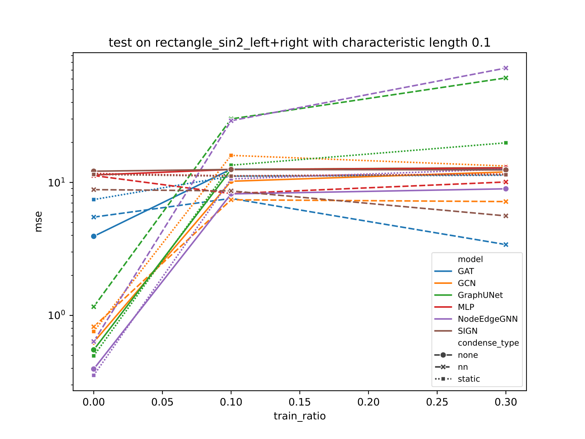
Figure 13: Boundary Variant Test with Strong Physical Loss and Auto Weight Total Loss
For the frequency variant and boundary variant tests, we present only the results using the auto weight loss, as defined in Equation loss-auto-weight.
Based on these tests, we can draw the following conclusions:
-
Performance in the frequency variant test surpasses that in the boundary variant test.
-
A notable disparity exists between the physical loss and data loss, indicating that achieving generalization in models trained with physical loss is challenging.
Case Study
In this subsection, we visualize the prediction result from SCEA. Specifically, we adopt the GNN SIGN trained only on the condition of the bottom Dirichlet boundary and top loading force of . The model is trained for 1000 epochs with a learning rate of 0.01. The target loss function is strong form loss as shown in Equation strong-form-loss.
We first test the prediction result on the same boundary and loading condition as the training dataset as shown in Figure 14. As can be seen, the result is pretty close to the ground truth.
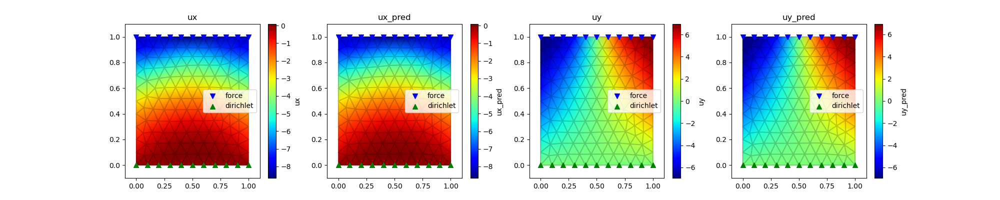
Figure 14: Case Study Invariant
To better investigate if the model has learned the frequency information from the loading function, we perform the frequency variant test, which changes the test loading frequency from 2 to 1, meaning the test mesh is somewhat different from the training mesh. The result is shown in Figure 15. The result is not as good as expected, meaning the model seldom learns anything from the loading information.
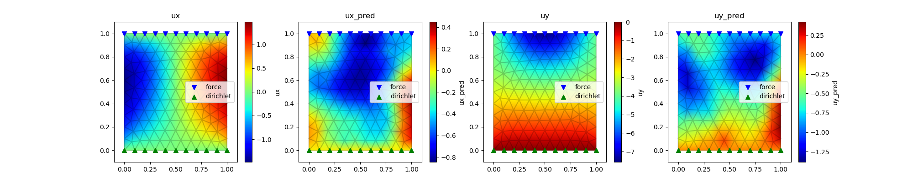
Figure 15: Case Study Frequency Variant
On the other hand, to study the influence of the Dirichlet boundary condition topology, we also change the boundary condition of the
dataset, which is shown in Figure 16. The result is also not as good as expected. Since one can hardly find any common from ground truth and prediction. It means that the model also cannot learn the boundary information from the one-shot training.
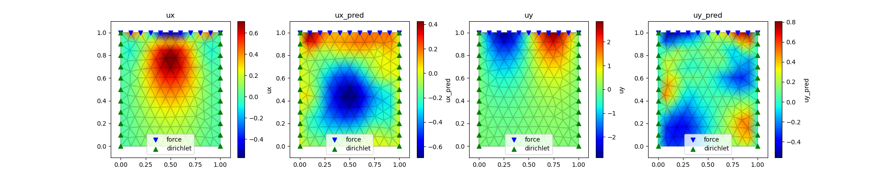
Figure 16: Case Study Boundary Variant
Generalization
To thoroughly evaluate the generalization capabilities of models trained with physical loss, we generated a comprehensive collection of random datasets. These datasets are primarily categorized into two topological types: triangles and quadrilaterals.
The triangle datasets were created by introducing a slight deviation to a standard unit triangle. This process is detailed in Equation triangle-dataset. Each triangle is slightly altered to introduce variability, yet maintaining a basic triangular structure. On the other hand, the generation of quadrilateral datasets follows a similar approach but adheres to the formula outlined in Equation quadrilateral-dataset. These quadrilaterals vary in shape and size, offering a diverse range of geometries for analysis.
Representative examples from these datasets are illustrated in Figures 14 and 15, showcasing the range of variability within each category.
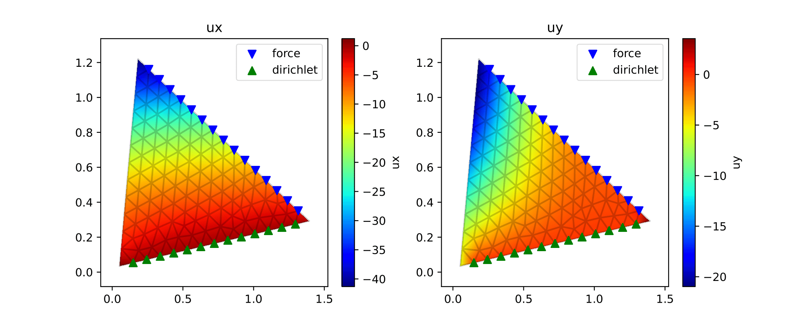
Figure 17: Randomly generated triangle dataset
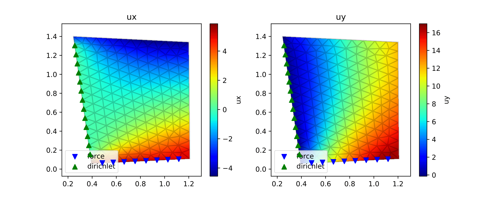
Figure 18: Randomly generated quadrilateral dataset
In total, 840 distinct datasets were produced, each characterized by unique boundary conditions and loading forces. This extensive collection is designed to rigorously test the model’s ability to adapt and learn from varied geometrical configurations and stress scenarios.
The experimental setup involves training the model on these datasets for a duration of 200 epochs, with a set learning rate of 0.005. This training regimen is aimed at thoroughly exposing the model to a wide spectrum of data, thereby challenging its learning and generalization mechanisms.
The outcomes of this training are depicted in Figure 19. A cursory examination of this figure reveals a notable struggle in the model’s ability to consistently learn and replicate physical patterns across the diverse range of datasets. This observation is further substantiated by the recorded loss metrics, as shown in Figure 16. Here, a significant discrepancy is observed between the data loss and physical loss metrics. Such a disparity could be attributed to the fundamental differences in their calculation methods. The physical loss computation involves the gradient of the shape function, focusing on the variation of geometric properties, whereas the data loss calculation is solely concerned with the discrepancies in function values. This divergence in approach may underlie the challenges faced by the model in achieving a high degree of generalization across varied datasets.
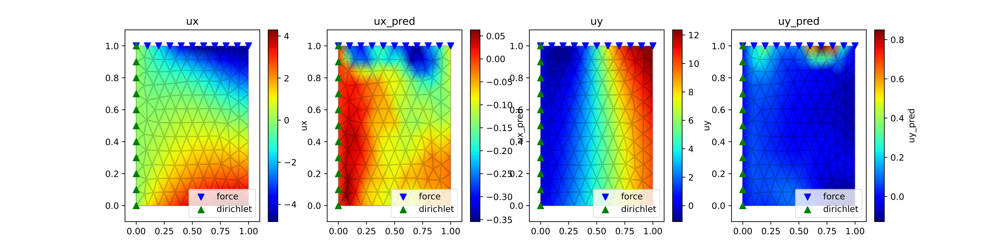
Figure 19: Generalization Test
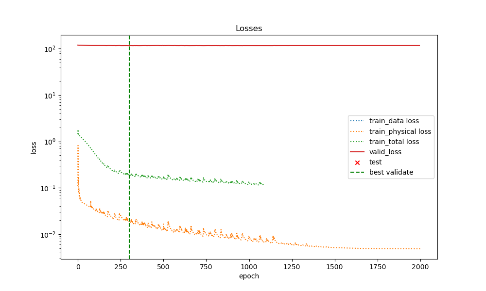
Figure 20: Loss Recording
Galerkin Prediction
In this section, we focus on the forward problem, specifically targeting the direct prediction of the Galerkin matrix. To this end, we employ the Galerkin Equivalent Architecture (GEA) method, which encompasses several sub-methods.
For our experiments, we utilize the Pratt bridge truss dataset, which is composed of trusses. The structure of these trusses is depicted in Figure 21.
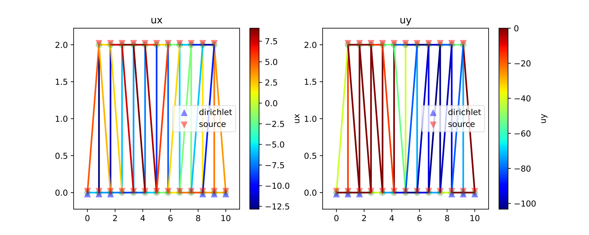
Figure 21: Pratt Bridge Truss Mesh
The models undergo extensive training for 20’000 epochs using the Adam optimizer. To enhance the learning process, we implement a cosine scheduler that progressively reduces the learning rate with each epoch. The Multi-Layer Perceptron (MLP) used in our models is configured with four layers and includes residual connections, enhancing its capacity for learning complex patterns.
Among the various approaches, the most intuitive is the pseudo bilinear method, as described in Equation local-bilinear-gea. The efficacy of this method is evaluated by comparing the predicted Galerkin matrix with the ground truth, as shown in Figure 22.
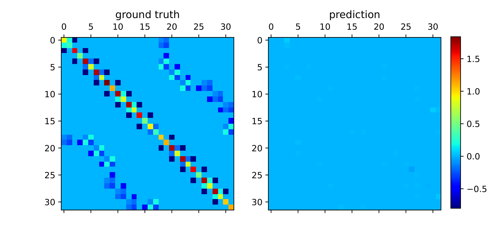
Figure 22: Pseudo Bilinear Local Galerkin Equivalent Architecture
In addition to the Local Pseudo Bilinear Galerkin Equivalent Architecture, we also explore other variants. The results of another such variant are illustrated in Figure 23.
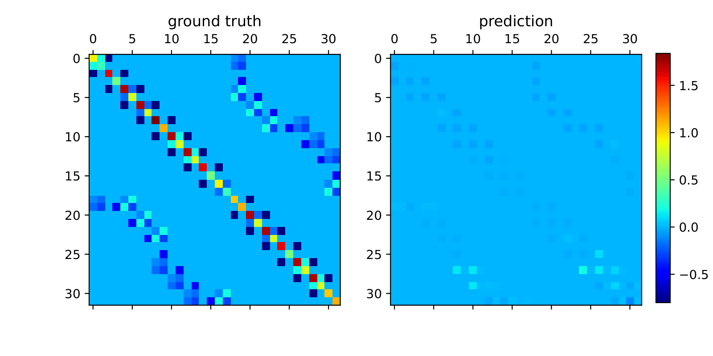
Figure 23: Pseudo Linear Local Galerkin Equivalent Architecture
Furthermore, we extend our analysis to the global Galerkin prediction, as outlined in Equation global-gea. The comparison of predictions with the actual Galerkin matrices is visually represented in Figure 24
reference=“fig:global-K”}.
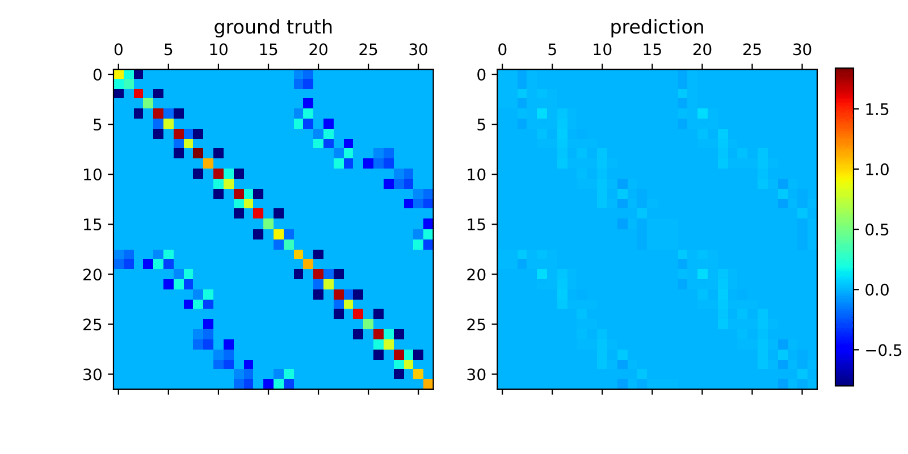
Figure 24: Global Galerkin Equivalent Architecture
Upon examining Figures 22,23,24, it becomes evident that, despite the challenges inherent in predicting the Galerkin matrix as indicated by the loss function in Equation gea-loss, the Global Galerkin Equivalent Architecture demonstrates superior performance compared to the local variants.
Conclusion
In this study, we delve into two principal problems in the realm of structural analysis. The first is the reverse problem, focused on deducing the displacement of a structure given the applied loading force. The second, known as the forward problem, involves predicting the loading force from known displacements. To address the reverse problem, we introduce the Static Condensation Equivalent Architecture (SCEA). This innovative approach integrates the concept of static condensation into Graph Neural Network (GNN) frameworks, offering a novel perspective in computational mechanics.
For the forward problem, we propose the Galerkin Equivalent Architecture (GEA). This architecture is not a singular solution but rather a suite of implementations, each tailored to capture the complex interactions in structural systems under varying conditions.
Our experimental findings shed light on the underlying connections between Graph Neural Networks (GNNs) and the Finite Element Method (FEM). These insights not only demonstrate the potential of GNNs in accurately modeling structural responses but also pave the way for
future explorations in this interdisciplinary field. The SCEA and GEA, with their respective focuses, contribute significantly to our
understanding of the intricate relationship between machine learning algorithms and traditional finite element analysis, opening new avenues for research and development in structural engineering and computational mechanics.